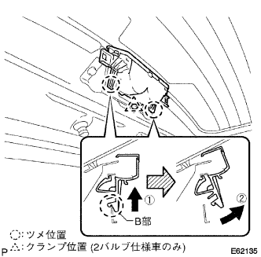

バックドア ガラス 取り外し |
| 1. バックドアトリム ボード取りはずし |
クリップ9箇所をはずし、バツクドアトリムボードを取りはずす。
| 2. センタストップランプ カバー取りはずし |
センタストツプランプカバーを①の方向に押して②の方向に引き、A部のツメのかん合2箇所を切り離す。
センタストツプランプカバーを③の方向に引き、クリップのかん合2箇所をはずし、センタストツプランプカバーを取りはずす。
| 3. センタストップランプASSY取りはずし |
クランプをはずし、センタストツプランプASSYのハーネスをセンタストツプランプブラケツトから切り離す。
|  |
センタストツプランプASSYを①の方向に押して②の方向に回転し、B部のツメのかん合2箇所を切り離す。
コネクタをはずし、センタストツプランプASSYを取りはずす。
| 4. リヤワイパ アーム ヘッドキャップ取りはずし |
| 5. リヤワイパ アームASSY取りはずし |
ナットをはずし、リヤワイパアームを取りはずす。
| 6. バックウインドウガラス チャンネル RH取りはずし |
クリップリムーバーを使用して、クリップ２個をはずし、バツクドアガラスチヤンネルＲＨを取りはずす。
赤外線ランプなどでドアに残った両面テープを暖める。
ボデーに残った両面テープをウエスなどでこすり取る。
| 7. バックウインドウガラス チャンネル LH取りはずし |
RH側はLHと同様の手順で行う。
| 8. バックドア ガラス取りはずし |
 |
各コネクタを切り離す。
吸引ゴムをガラスに張り付ける。
ガラス外周のボデー面に保護テープを貼る。
接着部に石けん水を十分に塗布する。
 |
接着部にウインドシールドナイフを差し込む。
刃先とガラス端部を直角に保持しながらウインドシールドナイフの刃をガラス面および端部に合わせるようにして、ガラス端部と平行に引いて接着剤を切断する。
図のようにピアノ線(0.6ｍｍが適当)が適当）を通し、両端をマイティプラーに取り付ける。
ピアノ線を交互に引いてスペーサおよびクリップを残し、接着剤を切断する。
スペーサおよびクリップのかん合をはずし吸引ゴムを持ってバツクドアガラスを取りはずす。